LINEで希望を集めて、叩き台を自動で作り、紙と同じ形のシフト表を出すアプリです。
※ この説明書の画面に出てくる名前・時間はすべて見本です（実在の人とは関係ありません）。
2026年11月版（試験環境）
緑＝スタッフがやること、青＝店長がやること
| 道具 | だれが使う | 何をする |
|---|---|---|
| スタッフ画面（LINEの中） | 全スタッフ | 希望シフトを出す・直す |
| 店長画面（LINEの中／パソコン） | 権限が「店長」の人だけ | 提出状況を見る・自動作成・手直し・確定・月や週の受付 |
| スプレッドシート | 店長・オーナー | データの置き場所。スタッフの追加や退職、招待コードの発行は上の「シフトアプリ」メニューから |
| スタッフ用 | https://liff.line.me/2012473249-yrLHA1fl グループLINEに貼ってOK。開いた人がだれかはLINEで判断するので、他の人の希望は見えません。 |
|---|---|
| 店長用 | https://liff.line.me/2012473249-4aDhOvyt グループには貼らない。スプレッドシートで権限が「店長」になっている人しか開けません。 |
どちらもスマホのLINEで開くのが基本です。パソコンのブラウザで開くとLINEのログイン画面が出るので、ログインすれば使えます（店長画面はパソコンのほうが見やすいです）。
このリンクはスプレッドシートの「設定」シートにも書いてあります。
スタッフ一人ひとりの「LINE」と「スプレッドシートの行」を結びつける作業です。最初の1回だけ。 そのために、一人ずつ違う招待コード（8けたの英数字）を配ります。
つながったかどうかは、「スタッフ」シートの LINEユーザーID の列に何か入っているかで分かります（中身は気にしなくてOK、消さないでください）。
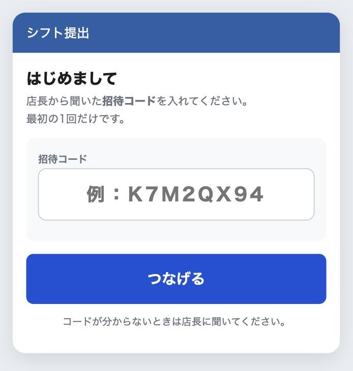
希望は2段階です。① 月の暫定（月のはじめに1ヶ月分をざっくり）→ ② 週の確認（毎週、その週を確かめる）。 スタッフに聞かれたときに説明できるよう、画面を載せておきます。
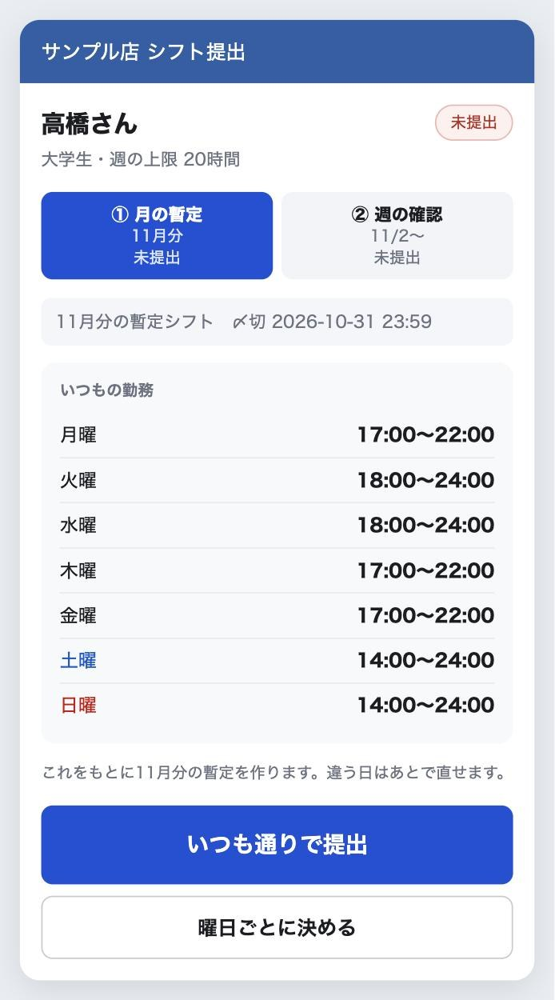
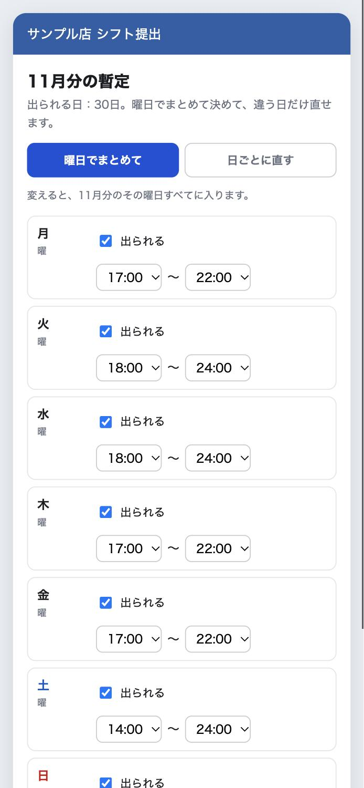
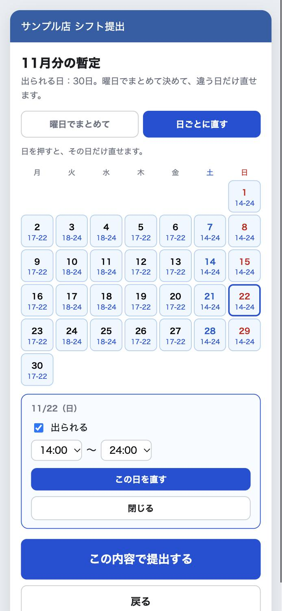
月の暫定で出した内容が、その週の分だけ並んで出ます。
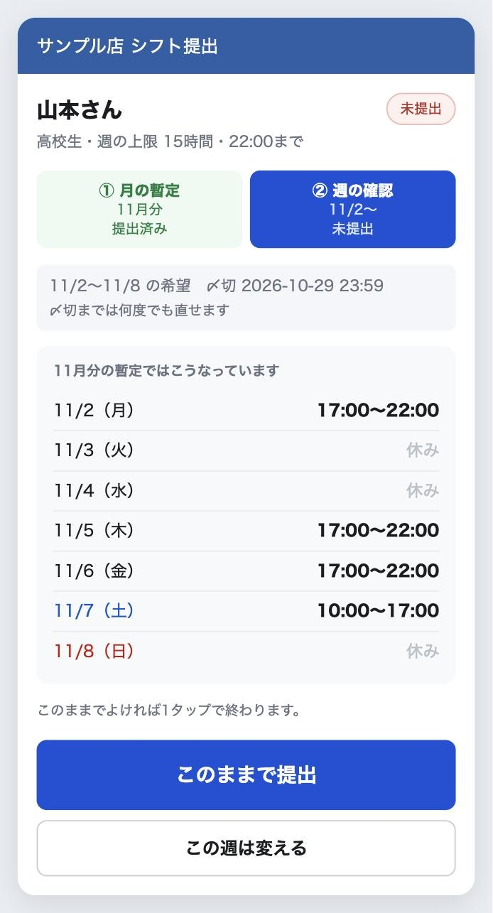
「希望を受け付けました」と、出した内容が出ます。画面はそのまま閉じて大丈夫です。
提出したかどうかは、店長画面の「提出状況」でいつでも確認できます。
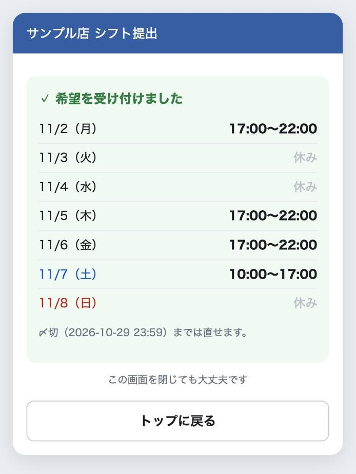
店長用リンクを開くと、上に 対象週 の切りかえと、4つのタブが出ます。
| タブ | やること |
|---|---|
| 提出状況 | だれが出したか、だれがどの日の何時から何時まで出られるか |
| シフト表 | 紙と同じ形の週間シフト表。ここで手直しして、確定する |
| 自動作成 | 叩き台をボタン1つで作る。必要人数の確認 |
| スキル | 店のルール、月を開く・週の受付を開け閉めする、スタッフのスキル一覧 |
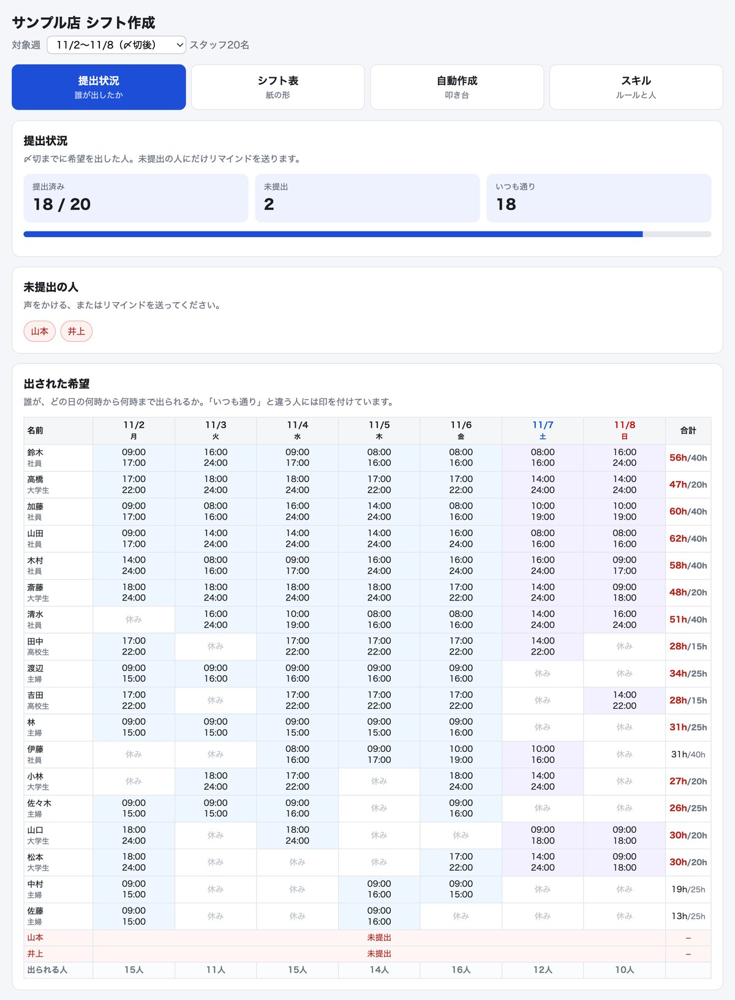
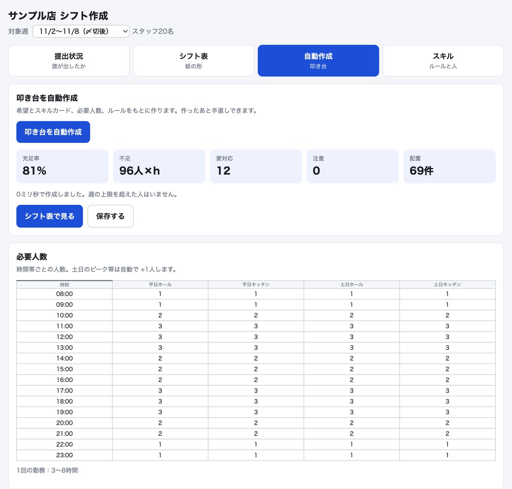
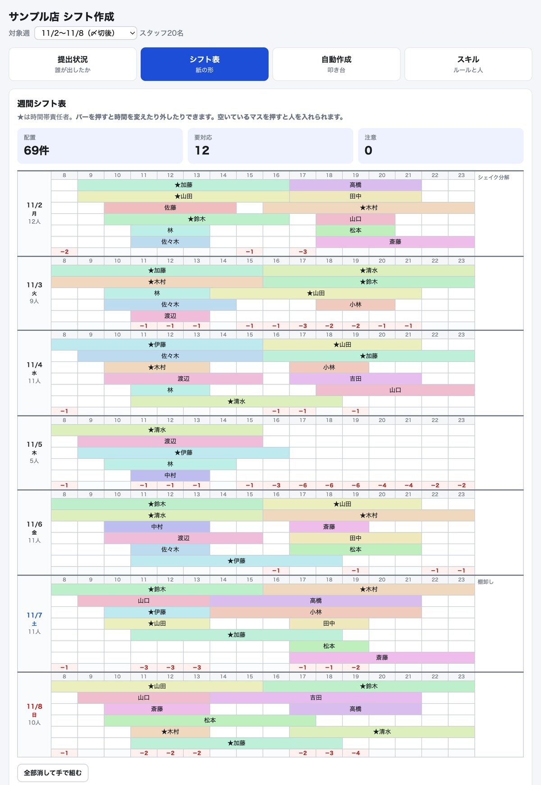
バーを押すと、その人の時間を変えたり外したりできます。
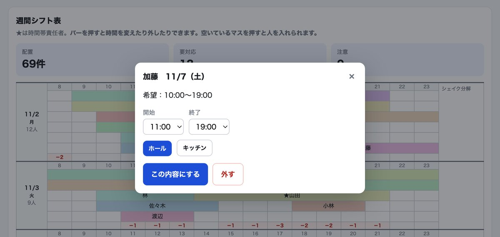
空いているマスを押すと、その日のその時間に人を入れられます。
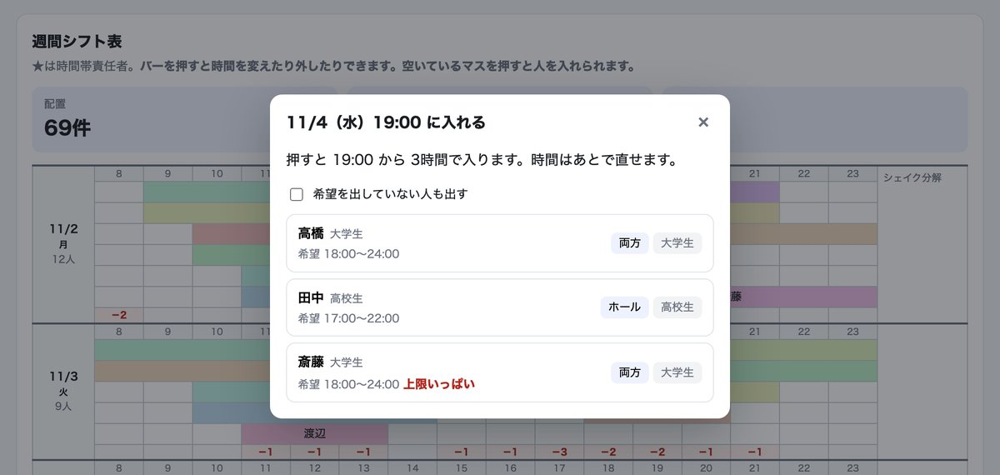
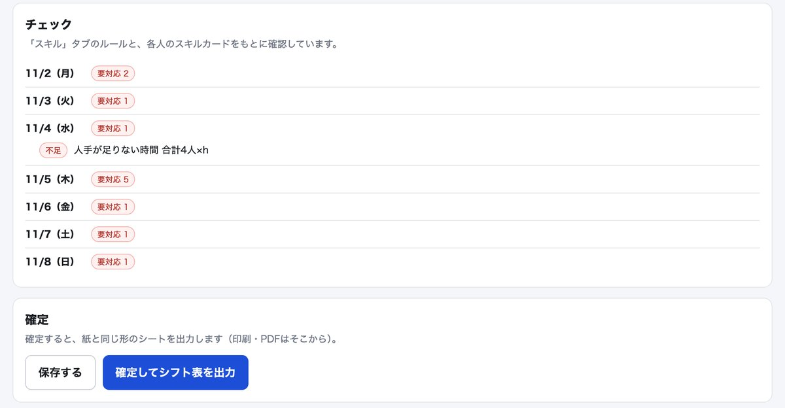
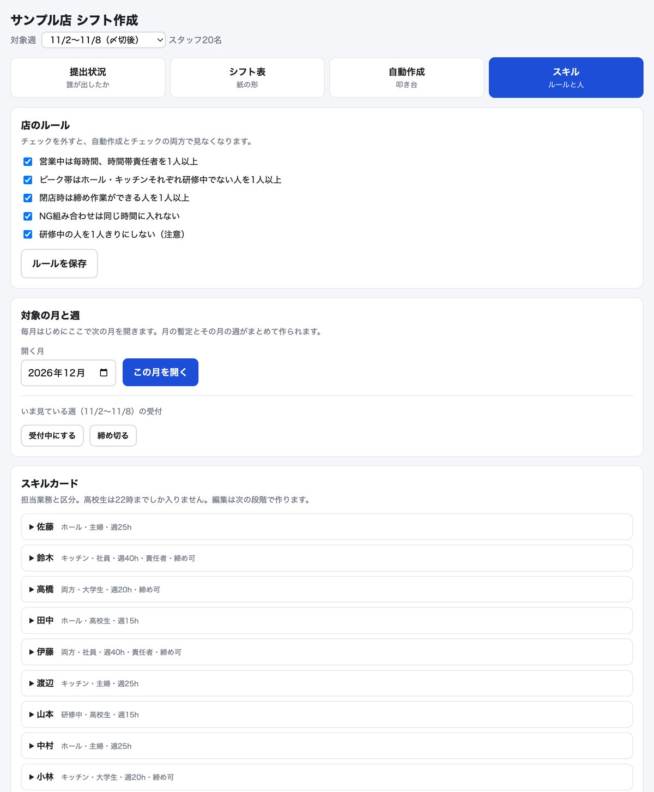
同じ月を2回開くことはできません（「もう作られています」と出ます）。
| いつ | やること |
|---|---|
| 受付を始める | 上の 対象週 で次の週を選び、スキルタブの 受付中にする。グループLINEで声かけ。 |
| 〆切（木曜） | 提出状況で未提出の人に声をかける。 〆切の曜日は「設定」シートの deadline_dow（0=月 … 3=木 … 6=日）で変えられます。 |
| 〆切のあと | 締め切る → 自動作成 → 手直し → 確定してシフト表を出力 |
| 確定したら | 「シフト表_◯◯」シートを印刷して貼る／PDFにしてグループLINEへ |
| 準備中 | 作っただけ。スタッフはまだ出せない |
|---|---|
| 受付中 | スタッフが希望を出せる |
| 締切後 | 店長が締め切った。シフトを組む段階 |
| 確定済み | シフト表を出力した |
人の入れ替えは、スプレッドシートの メニューから行います。行を手で消したり、手で足したりしないでください。
| こんなとき | メニュー | 何が起きるか |
|---|---|---|
| 新しい人が入った | 行が1つ増え、招待コードが出る。区分などを直してからコードを渡す（3章） | |
| 辞めた | これから先のシフトに入らなくなる。LINEとのつながりも外れる。行は消えないので過去のシフトはそのまま | |
| 辞めた人が戻ってきた | 在籍に戻り、新しい招待コードが出る | |
| 機種変更・LINEを作り直した コードをなくした | 新しいコードが出る。前のつながりは外れるので、本人にもう一度つないでもらう | |
| だれがまだつないでいないか見たい | 未接続の人とコードの一覧 | |
| コードを紙で配りたい | 切り取り用の紙のシートができる | |
| プルダウンが消えた・効かない | 決まった言葉しか入らないプルダウンを付け直す |
「（選んだ行）」と付いているものは、先に「スタッフ」シートでその人の行のどこかを選んでからメニューを押します。
| 列 | 触ってよい？ | 入れるもの |
|---|---|---|
| 名前 | ○ | シフト表に出る名前 |
| 区分 | ○ | 社員／主婦／大学生／高校生（プルダウン）。高校生は22時までしか入らない |
| 権限 | ○ | スタッフ／店長（プルダウン）。店長にすると店長画面が開ける |
| 週の上限（時間） | ○ | 1週間に入れる最大の時間（例：20） |
| 責任者・締め作業 | ○ | チェックを入れる |
| 担当業務 | ○ | ホール／キッチン／両方／研修中（プルダウン） |
| 組ませない相手 | ○ | 同じ時間に入れたくない人のスタッフID。複数ならカンマ区切り（例：s03,s07） |
| 色・メモ | ○ | 色はシフト表のバーの色（0〜359の数）。メモは自由 |
| 在籍 | △ | メニューの「退職にする／復帰させる」を使う |
| 招待コード | △ | メニューで出す。手で書かない |
| スタッフID・LINEユーザーID | × | 触らない。消すとその人がつながらなくなる |
| シート | 触ってよい？ | 内容 |
|---|---|---|
| いつもの勤務 | ○ | スタッフごとの曜日別のいつもの時間。月の暫定の最初の値になる |
| 必要人数 | ○ | 平日・土日の、時間ごとのホール・キッチンの人数 |
| 備考 | ○ | 日付と備考（棚卸しなど）。シフト表の右の欄に出る |
| 設定 | △ | 店名・〆切の曜日・シフト表の注意書きなど。「値」の列だけ直す |
| ルール | △ | 店長画面のスキルタブから変えるのがおすすめ |
| 期間・提出・希望・シフト・ログ | × | アプリが書きこむ所。見るのはOK、直したり行を消したりしない |
| シフト表_◯◯ | ○ | 確定で出た紙の形の表。印刷用なので自由に直してOK（アプリには戻りません） |
| こんなとき | こうする |
|---|---|
| スタッフ画面で「招待コードの入力が必要です」と出る | まだつないでいない人です。招待コードを渡して入れてもらう（3章） |
| 「招待コードが違います」と出る | コードの打ち間違い、または発行し直す前の古いコード。 で今のコードを確かめる |
| 「間違いが続いたので、しばらく待ってからお試しください」と出る | コードを5回間違えたため。30分待ってからもう一度 |
| 店長用リンクを開くと「権限がありません」と出る | 「スタッフ」シートで、その人の権限が「店長」になっているか確かめる。そもそもLINEとつないでいるか（LINEユーザーIDの列）も確認 |
| 機種変更したら自分の画面が出なくなった | LINEが変わるとつながりが切れることがあります。 でつなぎ直し |
| 保存しようとしたら「別の端末で変更されています」と出る | 店長画面を2台（スマホとパソコンなど）で同時に開いて直した。画面を開き直して、新しいほうの内容から直す |
| 読み込みが遅い | 開くのに数秒かかります（無料の仕組みのため）。「読み込んでいます」が出ていれば待ってください。20秒以上止まるならLINEを一度閉じて開き直す |
| 直したはずの画面が古いまま | LINEのアプリを一度完全に閉じて（スワイプで消して）から開き直す |
| 「いまは受付期間ではありません」と出る | 受付中の月・週がない状態。店長がスキルタブで月を開く／週を「受付中にする」 |
| 人が辞めたのに自動作成で入ってくる | を使ったか確認。在籍のチェックが外れていれば入りません |
| プルダウンが出ない・変な言葉が入った | を押してから、正しい言葉を選び直す |
| 間違えてシートの見出しや行を消した | すぐに 元に戻す（⌘Z / Ctrl+Z）。戻せないときはスプレッドシートの「ファイル → 変更履歴」から前の状態に戻せます |